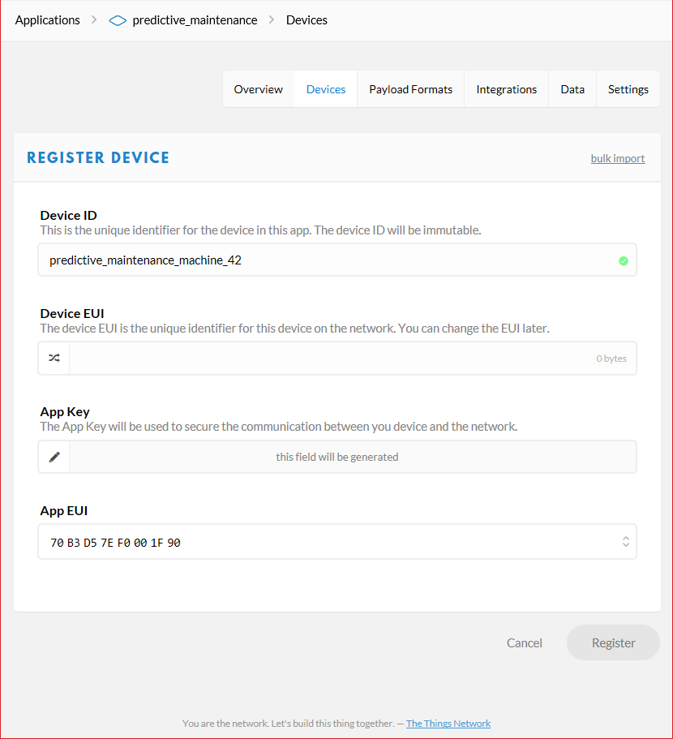
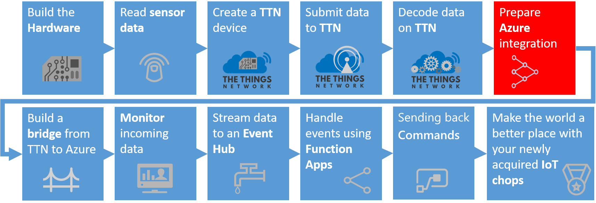
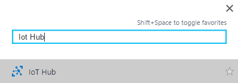

In this chapter you will configure the The Things Uno with two sensors, connect it to The Things Network platform. On the The Things platform you will provision the The Things Uno, receive its messages and decode the telemetry. As final step in this chapter you will deploy a bridge between the The Things Network platform and Microsoft Azure IoT platform.
Note: In this workshop, we will create uniquely named Azure resources. The suggested names could be reserved already. Just try another unique name.
A computer with internet access
A The Things Uno, a Grove - Water Sensor, a Grove - PIR Motion Sensor, wiring & a micro USB cable
Node.js. (We prefer Version 6)
Azure account create here (Azure passes will be present for those who have no Azure account (please check your email for final confirmation))
Bridge software between TTN and Azure TtnAzureBridge (or as zip)
IoT Hub Explorer (for Command-Line interface based usage; see below for installation steps) or Device Explorer. (Scroll down to the Downloads section to locate the download link for the SetupDeviceExplorer.msi installer)
Seeed Grove Led Bar software library (or as zip)
Modern browsers like Edge, Chrome and Firefox are preferred
Follow the workshop facilitator connecting the two sensors. A few important things:
3.3v pin on the 'The Things Uno'4 (fifth pin in the pin header) on the 'The Things Uno'GND pins on the 'The Things Uno'5v pin on the 'The Things Uno'GND pins on the 'The Things Uno'8 on the 'The Things Uno'9 on the 'The Things Uno'Your device and sensors should be connected as follows:


We start with running a simple sketch on the Arduino. This is a program which simulates a machine and when you press a button it 'breaks down'.
Copy the zip file 'Grove_LED_Bar-master.zip' from this OneDrive location to a folder (you do not have to unzip it)
Open the Arduino IDE
Select menu Sketch, Include library, Add .ZIP Library. A dialog to add a library is shown
Select the 'Grove_LED_Bar-master.zip' and select Open
Check if the library is imported correctly. A collection (of sketches) named 'Grove_LED_Bar-master' should appear in menu File, Examples, Examples from Custom Libraries
Connect The Things Uno via the micro USB cable to your computer
In the Tools menu, click Board and select Arduino Leonardo
In the Tools menu, click Port and select the serial port of your COMx (Arduino Leonardo)
Paste the following code in a new sketch:
```c
int commButton = 4; int cycleCompleted = 0; int errorCode = 0;
Grove_LED_Bar bar(9, 8, 0); // Clock pin, Data pin, Orientation
void setup() { debugSerial.begin(9600);
pinMode(commButton, INPUT);
delay(1000);
debugSerial.println("Initializing");
bar.begin();
bar.setLed(1,1); delay(250); bar.setLed(1,0); bar.setLed(2, 1); delay(250); bar.setLed(2,0);
for (int i = 3; i < 11; i++) { bar.setLed(i, 1); delay(250); };
for (int i = 11; i > 2; i--) { bar.setLed(i, 0); delay(250); };
bar.setLed(2,1);
debugSerial.println("Led bar initialized"); }
void loop() { // Simulate police LED lights using setLed method for (float i = 0; i < 1.1; i += .100f) { bar.setLed(2, 1 - i); delay(150); };
for (float i = 0; i < 1.1; i += .100f) { bar.setLed(2, i); delay(150); };
// If not in error state, update the number of cycles if (errorCode == 0) { clearProgress(cycleCompleted); showProgress(cycleCompleted); cycleCompleted++; debugSerial.print("Cycle completed: "); debugSerial.println(cycleCompleted ); }
// In the button is pushed, the machine enters an error state if (digitalRead(commButton) == HIGH) { errorCode = 99; bar.setLed(1,1); debugSerial.print("Error occured: "); debugSerial.println( errorCode); debugSerial.println("Repair of machine needed..."); }
// Communicate with TTN about number of cycles and current state (error code) byte buffer[2]; buffer[0] = (byte) cycleCompleted; buffer[1] = (byte) errorCode;
delay(12000); }
void showProgress(int i){ switch(i % 5){ case 0: bar.setLed(3,1); break; case 1: bar.setLed(4,1); break; case 2: bar.setLed(5,1); break; case 3: bar.setLed(6,1); break; case 4: bar.setLed(7,1); break; } }
void clearProgress(int i){ if ((i % 5) == 0) { bar.setLed(3,0); bar.setLed(4,0); bar.setLed(5,0); bar.setLed(6,0); bar.setLed(7,0); } } ```
In the Sketch menu, click Verify/Compile
Go to the Tools menu and open the Serial Monitor
Go back to the Sketch menu and click Upload
Once the sketch has been uploaded, You should see output like this.
Just wait a few seconds before pushing the button:
.html/sh
Initializing
Led bar initialized
Cycle completed: 1
Cycle completed: 2
Cycle completed: 3
...
Error occured: 99
Repair of machine needed...
Now we have a running Arduino with some basic logic. Let's send some messages using The Things Network.

Follow the steps to create an application and register your device.
A selection between Applications maintenance and Gateways maintenance must be made. Choose Applications

A The Things Network application is a logical container of several devices, providing the same telemetry. There are no TTN applications yet

Add a new application. Pick a unique Application ID (for example predictive_maintenance in lower case) and fill in a description

Press Add application. The application is added
Go to Devices
Click Register device
Enter a Device ID (for example predictive_maintenance_machine_42 in lower case)

Notice that the Register button is still disabled. A device needs a unique identifier
Click the Generate icon for 'Device EUI' so a unique EUI can be generated on register

The text in the EUI textbox is changed
The register button is now enabled. Click Register
The device is now created
Now we have to fine tune the settings
Click Settings in the upper right corner
Select activation method ABP instead of OTAA
And uncheck Frame counter checks Note: As stated, Disabling frame counter checks drastically reduces security and should only be used for development purposes. In this workshop, this makes you more flexible
Click Save
The following device settings are shown

Keep this page open, you need the device address, network session key and application session key in a minute
The TTN application is created. Your device has been registered and provisioned.

The sensor data is read, now it is time to send the sensor data to the The Things Network platform.
First we have to reference the The Thinks Network library for Arduino. Open the Arduino IDE
Select menu Sketch, Include library, Manage Libraries. A form named 'Library Manager' is shown
Search for The Things Network library using the keyword 'TheThingsNetwork'
A single library is shown. Select the library and Install the library
Close the Library manager
In the Arduino IDE, from the File menu, choose New to create a new sketch and paste the following code:
```c
const char devAddr = "00000000"; const char nwkSKey = "00000000000000000000000000000000"; const char *appSKey = "00000000000000000000000000000000";
TheThingsNetwork ttn(loraSerial, debugSerial, freqPlan);
int commButton = 4; int cycleCompleted = 0; int errorCode = 0;
Grove_LED_Bar bar(9, 8, 0); // Clock pin, Data pin, Orientation
void setup() { loraSerial.begin(57600); debugSerial.begin(9600);
pinMode(commButton, INPUT);
delay(1000);
debugSerial.println("Initializing");
// Initializing TTN communication... ttn.personalize(devAddr, nwkSKey, appSKey);
debugSerial.println("The Things Network connected"); // nothing to initialize bar.begin();
bar.setLed(1,1); delay(250); bar.setLed(1,0); bar.setLed(2, 1); delay(250); bar.setLed(2,0);
for (int i = 3; i < 11; i++) { bar.setLed(i, 1); delay(250); };
for (int i = 11; i > 2; i--) { bar.setLed(i, 0); delay(250); };
bar.setLed(2,1);
debugSerial.println("Led bar initialized"); }
void loop() { // Simulate police LED lights using setLed method for (float i = 0; i < 1.1; i += .100f) { bar.setLed(2, 1 - i); delay(150); };
for (float i = 0; i < 1.1; i += .100f) { bar.setLed(2, i); delay(150); };
// If not in error state, update the number of cycles if (errorCode == 0) { clearProgress(cycleCompleted); showProgress(cycleCompleted); cycleCompleted++; debugSerial.print("Cycle completed: "); debugSerial.println(cycleCompleted ); }
// In the button is pushed, the machine enters an error state if (digitalRead(commButton) == HIGH) { errorCode = 99; bar.setLed(1,1); debugSerial.print("Error occured: "); debugSerial.println( errorCode); debugSerial.println("Repair of machine needed..."); }
// Communicate with TTN about number of cycles and current state (error code) byte buffer[2]; buffer[0] = (byte) cycleCompleted; buffer[1] = (byte) errorCode;
// send message to TTN ttn.sendBytes(buffer, sizeof(buffer));
delay(12000); }
void showProgress(int i){ switch(i % 5){ case 0: bar.setLed(3,1); break; case 1: bar.setLed(4,1); break; case 2: bar.setLed(5,1); break; case 3: bar.setLed(6,1); break; case 4: bar.setLed(7,1); break; } }
void clearProgress(int i){ if ((i % 5) == 0) { bar.setLed(3,0); bar.setLed(4,0); bar.setLed(5,0); bar.setLed(6,0); bar.setLed(7,0); } } ```
Insert your device address in devAddr, network session key in nwkSkey and application session key in appSKey. You can use the handy clipboard button in the dashboard to copy it quickly as a HEX value

In the Sketch menu, click Upload
Open the Serial Monitor again from the Tools menu once upload has completed. Your device should now be sending telemetry to The Things Network
In The Things Network dashboard, go to Data. You see uplink packets arriving:
We are now receiving raw telemetry. We can decode and transform this in the TTN portal towards JSON messages.

Now, the hexidecimal payload is an efficient format for LoRa communication but it is not really useful upstream. We want human readable JSON. To decode and convert the hexidecimal payload to JSON messages, we have payload formats.
Add the following decoder payload format to decode the two bytes back to the decimal number of cycles completed and the current state:
```c function Decoder(bytes, port) { var cyclesCompleted = bytes[0]; var errorCode = bytes[1];
return { cyclesCompleted: cyclesCompleted, errorCode: errorCode }; } ```
You have to test this decoder function before you can save the function. Enter eg. '2A00' in the payload and click Test. The hexidecimal payload entered is shown in JSON format as test result
We want to rearrange the order of the JSON elements. To rearrange the order we use the following function as the converter payload format:
c
function Converter(decoded, port) {
return {
errorCode: decoded.errorCode,
numberOfCycles: decoded.cyclesCompleted
};
}
Again, you have to test this converter payload format before you can save the function. Again, enter eg. '2A00' in the payload and click Test. The hexidecimal payload entered is shown in JSON format with rearranged elements as test result
Finally, scroll to the bottom of the page and click Save
Go back to your data overview. Now you should see something like this:

Now we have clean JSON data ready to be processed in Azure IoT Hub and upstream.
Futher processing of the telemetry on the The Things Network platform is not possible. Processing telemetry has to be done on your own IoT plaform of your choice. In this case we choose the Azure IoT platform.
But first we need the secrets from the The Things Network platform to be able to create a secure connection between the two platforms. A secure connection between platforms is called a bridge. We will configure and deploy one.
We have to collect unique keys of the The Things Network application.
Scroll down to Access Keys. Write down the 'Access Key'

The Application ID and Access Key are required to get data from The Things Network.

Follow these steps to create an Azure IoT Hub.
On the left, a number of common Azure services are shown. Select More Services to open a list with all available services

Filter it with IoT Hub

Select IoT Hub and a new blade will be shown. Select Add and you will be asked to enter the information needed to create an IoT Hub

Enter a unique IoT Hub name eg. IoTWorkshop-ih. A green sign will be shown if the name is unique
Enter a unique Resource Group eg. IoTWorkshop-rg. A green sign will be shown if the name is unique
Select West Europe for the location, if needed

Press Create and the portal will start creating the service. Once it is created, a notification is shown. In the right upper corner, a bell represents the list of all notifications shown

Creating an IoT Hub takes some time. Meanwhile, we will connect the device and create the bridge.
The integration requires an Azure IoT Hub Shared access policy key name with Registry read, write and Device connect permissions. In this example, we use the iothubowner policy which has these permissions enabled by default.
Check the Azure portal. The resource group and the IoT Hub should be created by now (otherwise, we were unable to send duty cycles information to it)
On the left, select Resource groups. A list of resource groups is shown

Select the resource group IoTWorkshop-rg. It will open a new blade with all resources in this group
Select the IoT Hub IoTWorkshop-ih. It will open a new blade with the IoT Hub

The IoTHub has not received any messages yet. Check the general settings for Shared access policies

Write down the name of the IoT Hub eg. IoTWorkshop-ih
Navigate to the 'iothubowner' policy and write down this Connection String-Primary Key

This is the secret needed from the Azure IoT Hub.
Telemetry is arriving at the TTN portal. But we want to pass it on to the Azure IoT Platform. We need to build a 'bridge'.
Follow these steps to create the integration bridge between The Things Network and Azure IoT Hub.
Note: The bridge below is build using C# and will not run on non-windows devices. Use instead a bridge in the cloud as described in Deploying The Things Network Bridge to Azure as a WebJob
Note: The bridge is actually an open source project on github. We accept pull requests :-)
Create a new folder eg. c:\IoTWorkshop
Copy the zip file 'TTNAzureBridge.zip' from this OneDrive location to this folder and unzip it (Note: on some corporate networks, access to onedrive is limited. Ask the organization for a copy of the zip)

Navigate to the folder with the executable and identify the config file name 'TtnAzureBridge.exe.config'
Open this config file in notepad or another text file editor
Replace [TTN App Id] with the TTN Application ID
Replace [TTN App Access Key] with the TTN Access Key
Replace [iothub name] with the name of the IoT Hub in the app settings
In the connectionstring of 'IoTHub', replace [Connection String-Primary] with the remembered Connection String-Primary Key

The bridge is now ready for execution.
You are about to retrieve the telemetry from the The Things Network platform.
At the command prompt (press Windows button-R, type .html and enter), navigate to the new folder c:\iotworkshop
In the same folder, run TtnAzureBridge.exe to verify the bridge is working

This is example output:
.html/sh
time 1/11/2017 8:16:29 PM -> IoT Hub IoTWorkshop-ih connected
MQTT KeepAlivePeriod is 60000
MQTT subscribed to predictive_maintenance on eu.thethings.network
MQTT handling uplink
Message received (2/predictive_maintenance_machine_42/eui-b827ebffffc19ca8/51.46018/5.61902/868.1/-76): {"errorCode":0,"numberOfCycles":3}-IoT Hub message sent
MQTT handling uplink
Message received (12/predictive_maintenance_machine_42/eui-b827ebffffc19ca8/51.46018/5.61902/868.1/-77): {"errorCode":0,"numberOfCycles":13}-IoT Hub message sent
...
The telemetry is passed to the connect Azure IoTHub. We also see some basic information about the frame count, the node, the name and location of the gateway, the Lora channel used and the quality of the reception (RSSI)
Note: the message consists of valid JSON telemetry.
Note: Keep the bridge running until the end of the complete workshop.

We can check the arrival of messages in the Azure IoT Hub. This can be done using a UI app named Device Explorer or using a Command-Line tool named IoT Hub Explorer. Choose one below
We can check the arrival of the messages in the Azure IoT Hub using the Device Explorer.
The Device Explorer tool is a Windows-only graphical tool for managing your devices in IoT Hub.
The easiest way to install the Device Explorer tool in your environment is to download the pre-built version by clicking Azure IoT SDKs releases. Scroll down to the Downloads section to locate the download link for the SetupDeviceExplorer.msi installer. Download and run the installer.
To run the Device Explorer tool, double-click the DeviceExplorer.exe file in Windows Explorer. The default installation folder for this application is C:\Program Files (x86)\Microsoft\DeviceExplorer.
Start the Device Explorer from the desktop or using the start menu
On the Configuration Tab, insert the IoT Hub Connection String-primary key and the name of the IoT Hub (as Protocol Gateway Hostname)
Press Update
On the Management tab, your device should already be available. It was registered by the bridge the very first time, telemetry arrived

On the Data tab, Select your Device ID (like 'predictive_maintenance_machine_42') and press Monitor
Now we check the leds on the device for Sending cycle updates a couple of times. This will result in the following messages while Duty Cycle telemetry is sent by the device
.html/sh
Receiving events...predictive_maintenance_machine_42
1/5/2017 9:46:18 PM> Device: [predictive_maintenance_machine_42], Data:[{"errorCode":0,"numberOfCycles":1}]
1/5/2017 9:46:19 PM> Device: [predictive_maintenance_machine_42], Data:[{"errorCode":0,"numberOfCycles":2}]
1/5/2017 9:46:20 PM> Device: [predictive_maintenance_machine_42], Data:[{"errorCode":0,"numberOfCycles":3}]
We can check the arrival of the messages in the Azure IoT Hub using the IoT Hub Explorer. This tool is Command-Line based, please check the installation requirements.
Note: See the full example for more options of this tool.
Create a new folder eg. c:\iothubexplorer
At the command prompt (press Windows button-R, type .html and enter), navigate to the new folder c:\iothubexplorer
In this folder, run the following command npm install -g iothub-explorer@latest in your command-line environment, to install the latest (pre-release) version of the iothub-explorer tool
Login to the IoT Hub Explorer by supplying your remembered IoT Hub Connection String-primary key using the command iothub-explorer login "[your connection string]"
A session with the IoT Hub will start and it will last for approx. one hour:
.html/sh
Session started, expires on Thu Jan 05 2017 22:53:55 GMT+0100 (W. Europe Standard Time)
To monitor the device-to-cloud messages from a device, use the following command iothub-explorer monitor-events --login [your connection string] and fill in your remembered IoT Hub 'Connection String-primary key'
All devices are monitored now. This will result in the following messages
```.html/sh Monitoring events from all devices... From: predictive_maintenance_machine_42 { "errorCode": 0, "numberOfCycles": 8 }
From: predictive_maintenance_machine_42 { "errorCode": 0, "numberOfCycles": 9 }
```
The messages are shown here too. These messages are now available in Azure.
Next Step: You are now ready to process your data in an Azure Function. Continue to Receiving and handling The Things Network telemetry in Azure